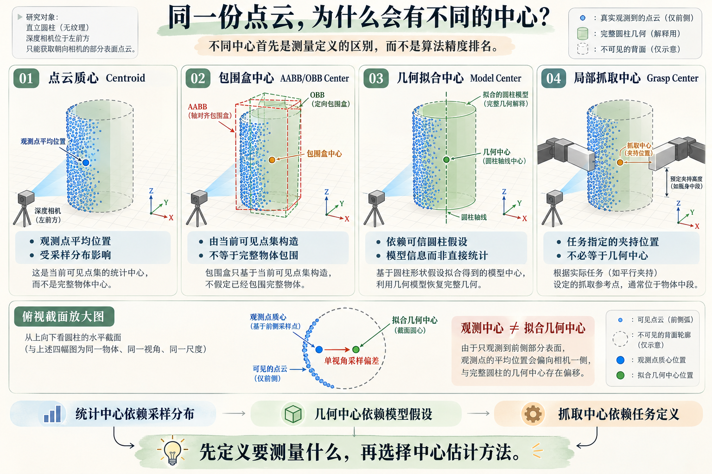
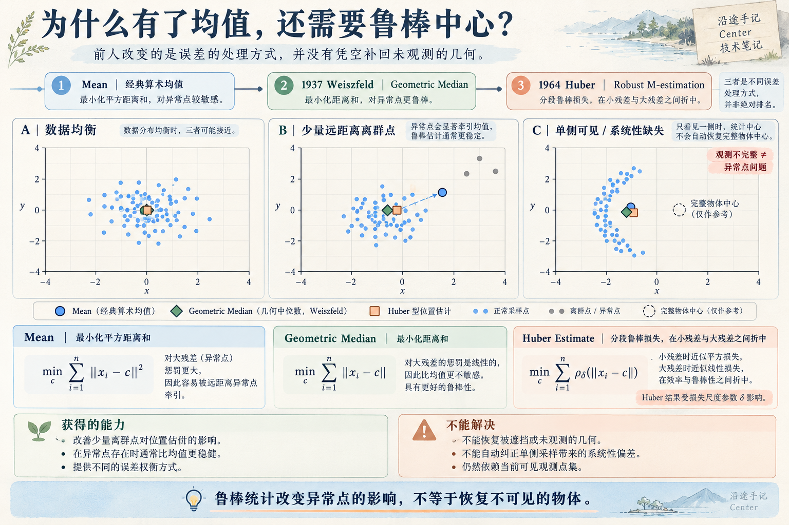
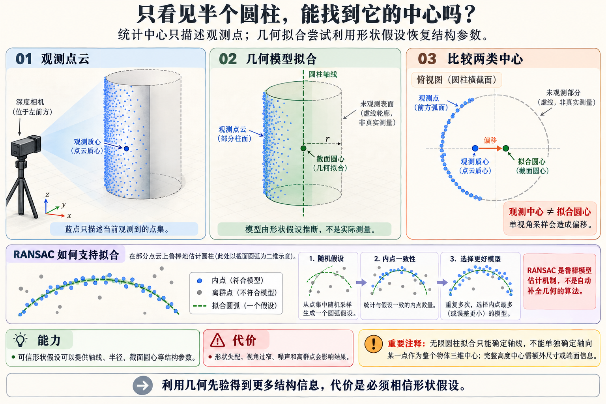

BASE
Arithmetic Mean / Centroid
经典最小二乘位置估计 · 非特定年份的算法发明
计算全部有效点的算术平均。它也可以看作使点到中心的平方距离之和最小的位置。
c̄ = (1 / N) Σ pᵢ = argminₓ Σ ‖pᵢ − x‖²
得到了什么无需优化迭代；计算开销低，适合快速构建位置基线。
付出了什么大残差被平方放大；离群点和不均衡采样会拉动中心。
一个三维位置，可以来自点的统计分布，也可以来自包围范围、几何模型或预定抓取区域。本篇只整理中心估计的经典技术、里程碑与工程代价，不再重复 Q01 的探索过程。
单视角点云只是可见表面的采样集合。把它们求平均、求包围盒中心，或拟合完整形状之后再取中心，得到的并不一定是同一个位置。
由当前点集的分布决定：Mean、Geometric Median、Huber 类估计。
由包围范围或拟合形状定义：AABB / OBB Center、圆柱轴线等。
由预定抓法指定：瓶身抓取高度、局部接触区域、夹爪 TCP 参考位置。
images/q01-center-fig-01-center-definitions.png
这是一条围绕“如何定义和稳定估计一个位置”的经典技术脉络。这里选取具有代表性的数学节点，而不是把年代相邻的方法误写成前后淘汰关系。
计算全部有效点的算术平均。它也可以看作使点到中心的平方距离之和最小的位置。
几何中位数最小化到各点的欧氏距离之和；Weiszfeld 提供了经典迭代求解方法，迭代中按当前位置到各点的距离进行加权更新。
注意：几何中位数不是把 x、y、z 分别取中位数的“坐标中位数”；两者的数学目标不同。
Weiszfeld 原始论文 · Tôhoku Mathematical Journal ↗Huber 提供了鲁棒位置估计的经典理论。在工程中，可通过对距离残差使用分段损失，把小残差的平方惩罚和大残差的线性惩罚结合起来。
式子是 Huber 类损失在三维位置估计中的常见扩展表示，不等于逐字复现 1964 年论文的全部假设。
Huber 1964 · 原始论文 ↗images/q01-center-fig-02-robust-center-boundaries.png
几何中心不只是“更好的均值”。它需要先定义包围范围，或假设物体属于某种参数化形状。与统计估计相比，改变的是位置本身的定义与信息来源。
AABB 的中心是当前点集各坐标方向最大、最小边界的中点；OBB 则先确定有向包围盒，再取盒体中心。两者都描述当前观测点集的范围，不自动代表完整物体。
PCA-OBB 与最小体积 OBB 是不同构造目标；它们也并不保证得到同一个中心。
不直接受某个密集区域的点数权重控制，便于同时得到范围与位置。
极值点、遮挡和包围盒的构造方式都可能改变结果。
当目标真的接近规则几何时，可估计圆心、球心、圆柱轴线等参数。这可能帮助理解单视角未直接测到的结构，但结论属于模型约束下的推断。
特别注意：拟合一根圆柱轴线不等于得到唯一的三维“中心点”。若要把轴线变成具体抓取点，仍需确定轴向高度或其他参考规则。
Fischler 与 Bolles（1981）提出 RANSAC 作为鲁棒模型估计范式。用于圆、球、圆柱等拟合时，可通过假设生成和一致性评估降低异常点的干扰；中心来自最终的几何模型参数，而非 RANSAC 算法直接输出。
即使混入一些不支持模型的点，仍有机会从内点估计稳定的参数。
需要模型类型、内点阈值与足够的可观测几何；残缺或退化数据仍可能产生错误模型。
RANSAC 与 Weiszfeld / Huber 属于不同问题设定的技术分支，不是“1981 年替代了 1964 年的方法”。
Fischler & Bolles 1981 · 论文来源 ↗images/q01-center-fig-03-partial-cylinder-center-estimation.png
这一节不做算法排行榜，而是把前面的方法转化为实际可复用的选择依据。
| 当前条件 | 优先尝试 | 必须检查的代价 |
|---|---|---|
| 快速粗定位，采样相对均衡 | 质心 Mean | 单视角可见区域是否偏移了目标位置 |
| 少量极端离群点明显 | 几何中位数 / Huber 类方法，或清理离群点 | 参数、计算量以及系统性缺失是否仍在 |
| 只关心当前点集的空间范围 | AABB / OBB Center | 是否受极值点、遮挡和 OBB 方向构造影响 |
| 目标接近可靠的圆柱、球等形状 | 几何模型拟合中心 / 轴线 | 模型残差、可观测性和形状假设是否成立 |
| 只需要一个局部抓取位置 | 任务定义的局部中心 | 抓取区域、接触与 TCP 参考是否明确 |
先问定义：我要的是观测点的平均位置，还是物体 / 任务中心？
再问误差：主要问题是离群点、采样偏差，还是形状假设？
最后问任务：预定抓法真的需要完整物体的中心吗？
额外提醒：如果要比较算法，请使用同一目标、同一坐标系、同一观测集，区分“对观测点统计目标的误差”和“对完整物体真实中心的误差”。
质心、包围盒中心和许多形状拟合功能都已有成熟工具。除非需要研究估计器本身，否则没必要重新发明基础点云接口；更重要的是输入点集、过滤规则和中心定义。
import numpy as np
# xyz: (N, 3), 单位与相机点云一致（通常为米）
xyz = np.asarray(xyz, dtype=np.float64)
xyz = xyz[np.isfinite(xyz).all(axis=1)]
if len(xyz) == 0:
raise ValueError("没有有效三维点")
centroid = xyz.mean(axis=0) # 点云质心
coord_median = np.median(xyz, axis=0) # 坐标中位数，不是几何中位数// PCL: 统计质心；亦有 computeCentroidAndOBB()
pcl::compute3DCentroid(cloud, centroid4f);
# Open3D: 当前点集包围盒中心
pcd.get_axis_aligned_bounding_box().get_center()
pcd.get_oriented_bounding_box().get_center()上述为接口片段，不是可直接混合运行的同一语言脚本。PCL 的 centroid 与 OBB center 是两个独立输出；Open3D 常规 OBB 基于 PCA 的近似构造，不能与最小体积 OBB 混同。
本页不继续拆更多子页面；想了解证明、特殊情况和实现细节，直接阅读相应原始论文或官方 API。
面对一个位置估计问题，先判断中心的定义，再选择抗噪声方式或几何假设。不存在一个能够无条件代替其他中心的“最好算法”。
如果这些位置定义已经清楚，而抓取仍然缺少方向，那么问题就已经从 Center 转向 Q01 后面的空间方向与接触约束了。